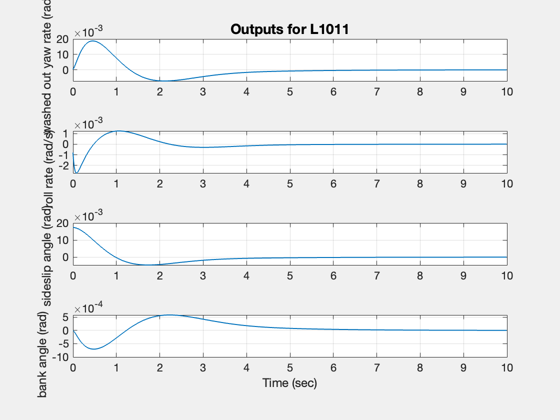
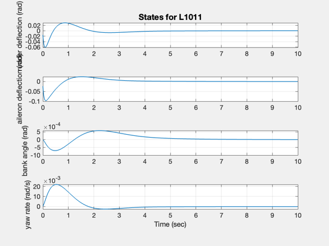
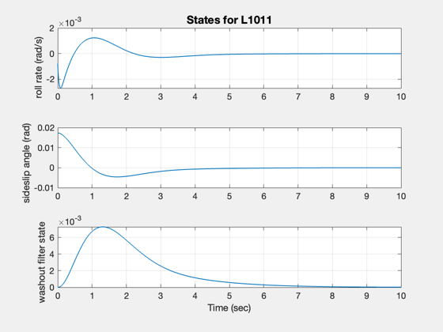

Demonstrate eigenvector assignment using a CCV Model
The example is taken from:
Andry, A. N., Jr., Shapiro, E.Y. and J.C. Chung, "Eigenstructure Assignment for Linear Systems," IEEE Transactions on Aerospace and Electronic Systems, Vol. AES-19, No. 5. September 1983.
------------------------------------------------------------------------ See also L1011, EVAssgnC, IC ------------------------------------------------------------------------
Contents
%-------------------------------------------------------------------------- % Copyright (c) 1997 Princeton Satellite Systems, Inc. % All rights reserved. %--------------------------------------------------------------------------
System
%-------
g = L1011;
Desired eigenvalues
%-------------------- j = sqrt(-1); lambda = [ -1.5 + j*1.5;... -1.5 - j*1.5;... -2.0 + j*1.5;... -2.0 + j*1.5];
Desired eigenvectors
%--------------------- vD = [ 0 0 1 0;... 1 0 0 1;... 0 1 0 0;... 0 0 0 0]; % The design matrix. One column per state % Each row relates vD to the plant matrix % For example, rows 7 and 8 relate column % 3 in vD to the plant. In this case % vD(1,3) relates to state 2 and vD(2,4) % relates to state 3. %---------------------------------------- d = [0 0 1 0 0 0 0;... % Desired structure for eigenvector 1 0 0 0 1 0 0 0;... 0 0 0 0 1 0 0;... 0 0 1 0 0 0 0;... % Desired structure for eigenvector 2 0 0 0 0 1 0 0;... 0 0 0 0 0 1 0;... 0 0 1 0 0 0 0;... % Desired structure for eigenvector 3 0 0 0 1 0 0 0;... 0 0 0 0 0 1 0;... 0 0 0 0 0 0 1;... 0 0 0 1 0 0 0;... % Desired structure for eigenvector 4 0 0 0 0 1 0 0;... 0 0 0 0 0 1 0;... 0 0 0 0 0 0 1]; % Rows in D per eigenvalue % Each column is for one eigenvalue % i.e. column one means that the first three rows of % D relate to eigenvalue 1 %--------------------------------------------------- rD = [3,3,4,4];
Compute the gain and the acheived eigenvectors
%----------------------------------------------- disp(' ') disp('----') disp('Gain') disp('----') [k, v] = EVAssgnC( g, lambda, vD, d, rD ); k
----
Gain
----
k =
-3.3419 0.14967 4.8815 0.38823
-1.3695 -2.43 5.984 -4.7901
Create the closed loop system
%------------------------------ [a, b, c] = getabcd( g ); aCL = a - b*k*c; disp(' ') disp('-----------------------') disp('Closed loop eigenvalues') disp('-----------------------') eig(aCL)
-----------------------
Closed loop eigenvalues
-----------------------
ans =
-22.009 + 0i
-17.065 + 0i
-1.5 + 1.5i
-1.5 - 1.5i
-2 + 1.5i
-2 - 1.5i
-0.69754 + 0i
Digitize the closed loop system using a zero order hold
%-------------------------------------------------------- % Simulate %--------- g = set( g, aCL, 'a' ); x = [0;0;0;0;0;pi/180;0]; IC( g, x, 0.01, 1000 ); %-------------------------------------- % $Id: 3c8612846bfe275b3c48b8de6ce2b1b257531bf5 $  